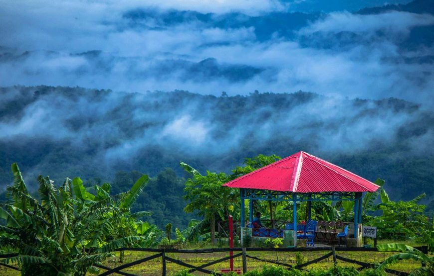
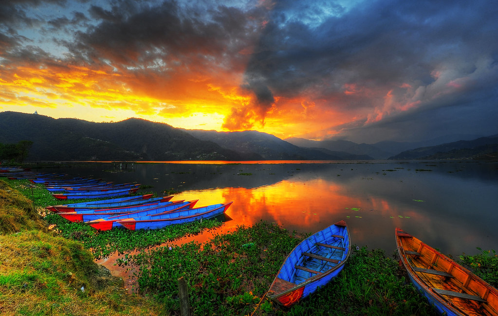
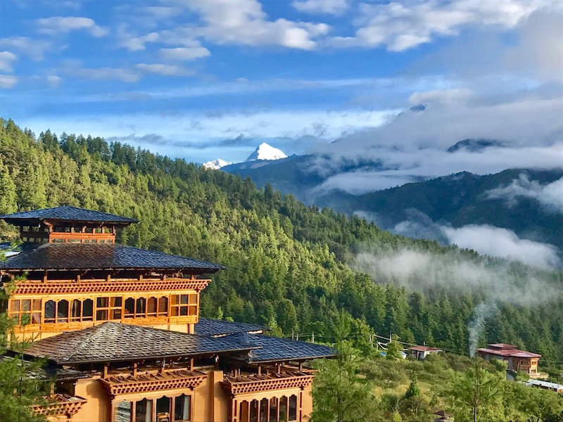

Sajek valley: Sajek is a union at Baghaichari Upazila in Rangamati districts. Basically it is name of a river which separates Bangladesh from India. The river flows into the Karnafuli River in the Chittagong Hill Tracts. Sajek Valley is situated in the North angle of Rangamati, near the Mizoram border boundary area. The valley is 1,800 ft high form sea lavel. Many small rivers flow through the hills among them Kachalon and Machalong are famous. The main ethnic minorities on the valley are Chakma, Marma, Tripura, Pankua, Lushai and Sagma. The place is known as hill queen for its natural beauty and roof of Rangamati. Marishsha is a name of a place near Sajek Valley. Most of the houses are made with bamboo. There is another place near Sajek, it is Kanlak, and it is famous for its orange orchard.

